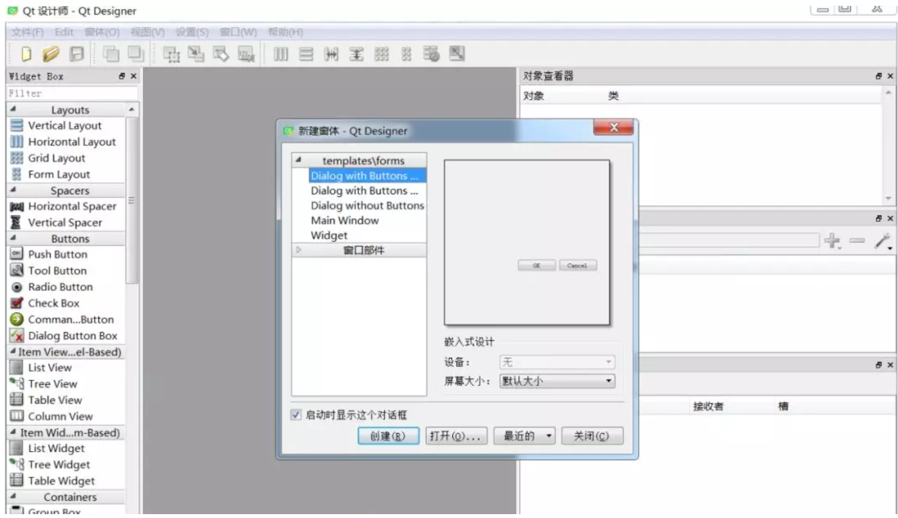
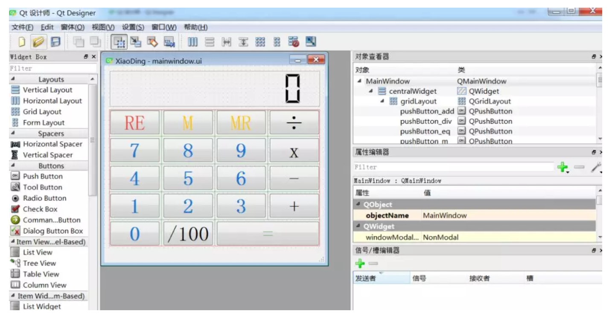
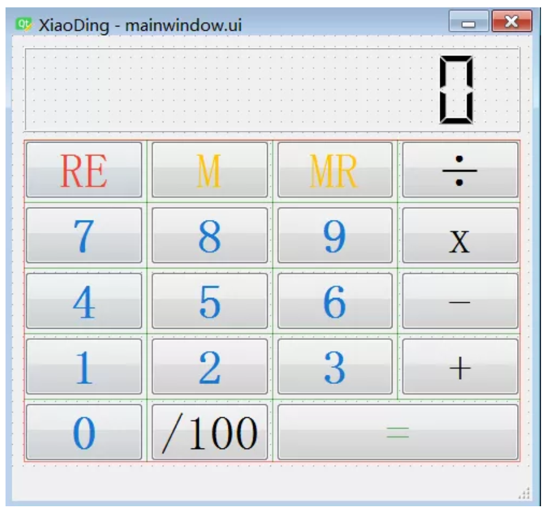
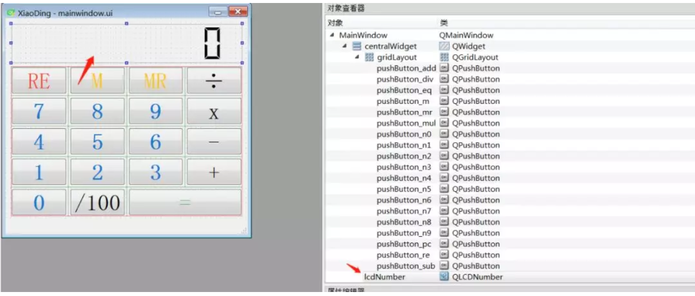
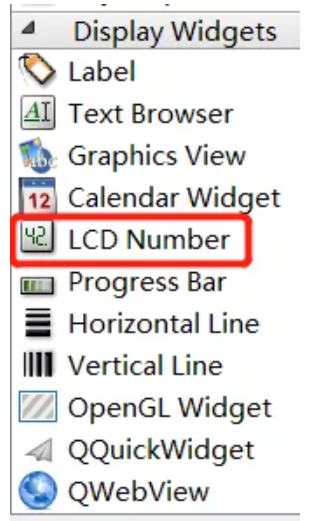
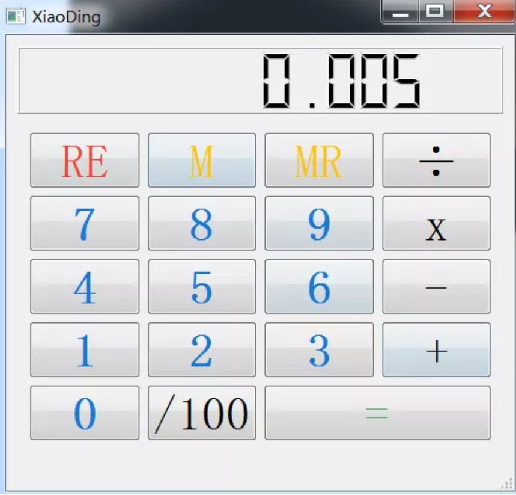

5 制作小而美的计算器¶
- ui设计
使用qt designer ，按装anaconda后，在如下路径找到：
conda3.05\Library\bin
designer.exe文件，双击启动：

创建窗体，命名为XiaoDing，整个的界面如下所示：

qt 设计器提供的常用控件基本都能满足开发需求，通过拖动左侧的控件，很便捷的就能搭建出如下的UI界面，比传统的手写控件代码要方便很多。
最终设计的计算器XiaoDing界面如下，

比如，其中一个用于计算器显示的对象：lcdNumber，对象的类型为：LCD Number。右侧为计算器中用到的所有对象。


- 转py文件
使用如下命令，将设计好的ui文件转为py文件：
pyuic5 -o ./calculator/MainWindow.py ./calculator/mainwindow.ui
- 计算器实现逻辑
导入库：
from PyQt5.QtGui import *
from PyQt5.QtWidgets import *
from PyQt5.QtCore import *
import operator
from MainWindow import Ui_MainWindow
主题代码逻辑很精简：
# Calculator state.
READY = 0
INPUT = 1
class MainWindow(QMainWindow, Ui_MainWindow):
def __init__(self, *args, **kwargs):
super(MainWindow, self).__init__(*args, **kwargs)
self.setupUi(self)
# Setup numbers.
for n in range(0, 10):
getattr(self, 'pushButton_n%s' % n).pressed.connect(lambda v=n: self.input_number(v))
# Setup operations.
self.pushButton_add.pressed.connect(lambda: self.operation(operator.add))
self.pushButton_sub.pressed.connect(lambda: self.operation(operator.sub))
self.pushButton_mul.pressed.connect(lambda: self.operation(operator.mul))
self.pushButton_div.pressed.connect(lambda: self.operation(operator.truediv)) # operator.div for Python2.7
self.pushButton_pc.pressed.connect(self.operation_pc)
self.pushButton_eq.pressed.connect(self.equals)
# Setup actions
self.actionReset.triggered.connect(self.reset)
self.pushButton_ac.pressed.connect(self.reset)
self.actionExit.triggered.connect(self.close)
self.pushButton_m.pressed.connect(self.memory_store)
self.pushButton_mr.pressed.connect(self.memory_recall)
self.memory = 0
self.reset()
self.show()
基础方法：
def input_number(self, v):
if self.state == READY:
self.state = INPUT
self.stack[-1] = v
else:
self.stack[-1] = self.stack[-1] * 10 + v
self.display()
def display(self):
self.lcdNumber.display(self.stack[-1])
按钮RE,M, RE对应的实现逻辑：
def reset(self):
self.state = READY
self.stack = [0]
self.last_operation = None
self.current_op = None
self.display()
def memory_store(self):
self.memory = self.lcdNumber.value()
def memory_recall(self):
self.state = INPUT
self.stack[-1] = self.memory
self.display()
+,-,x,/,/100对应实现方法：
def operation(self, op):
if self.current_op: # Complete the current operation
self.equals()
self.stack.append(0)
self.state = INPUT
self.current_op = op
def operation_pc(self):
self.state = INPUT
self.stack[-1] *= 0.01
self.display()
=号对应的方法实现：
def equals(self):
if self.state == READY and self.last_operation:
s, self.current_op = self.last_operation
self.stack.append(s)
if self.current_op:
self.last_operation = self.stack[-1], self.current_op
try:
self.stack = [self.current_op(*self.stack)]
except Exception:
self.lcdNumber.display('Err')
self.stack = [0]
else:
self.current_op = None
self.state = READY
self.display()
main函数：
if __name__ == '__main__':
app = QApplication([])
app.setApplicationName("XiaoDing")
window = MainWindow()
app.exec_()
